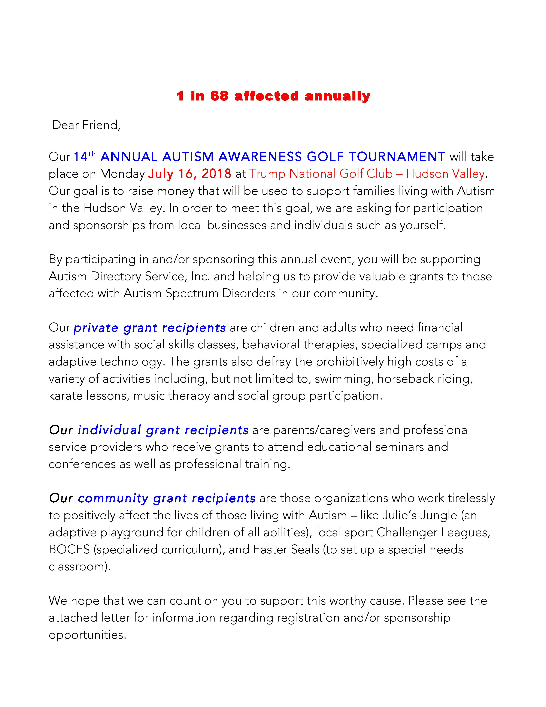

We are a locally based not-for-profit that serves families living with Autism throughout the Hudson Valley. We were founded in 1991 by three mothers with sons with Autism who realized in order to help their children they needed to get help from parents in the same situation.
ADS facilitates families in their quest to find resources and services for their children. Through the experiences and networking of our various board members and volunteers, we are able to share and disseminate information and ideas.
At ADS, we understand that each child with Autism faces a different set of challenges; that is why each referral is individualized, personalized and based upon the needs of each child..
Upcoming Events
